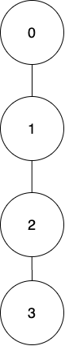
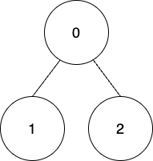

| Category | Difficulty | Likes | Dislikes |
|---|---|---|---|
| Algorithms | Hard | 232 | 18 |
array | dynamic-programming | bit-manipulation | tree | depth-first-search | memoization
de-shaw
There exists an undirected tree rooted at node 0 with n nodes labeled from 0 to n - 1. You are given a 2D integer array edges of length n - 1, where edges[i] = [ai, bi] indicates that there is an edge between nodes ai and bi in the tree. You are also given a 0-indexed array coins of size n where coins[i] indicates the number of coins in the vertex i, and an integer k.
Starting from the root, you have to collect all the coins such that the coins at a node can only be collected if the coins of its ancestors have been already collected.
Coins at nodei can be collected in one of the following ways:
coins[i] - k points. If coins[i] - k is negative then you will lose abs(coins[i] - k) points.floor(coins[i] / 2) points. If this way is used, then for all the nodej present in the subtree of nodei, coins[j] will get reduced to floor(coins[j] / 2).Return the maximum points you can get after collecting the coins from all the tree nodes.
Example 1:

Input: edges = [[0,1],[1,2],[2,3]], coins = [10,10,3,3], k = 5
Output: 11
Explanation:
Collect all the coins from node 0 using the first way. Total points = 10 - 5 = 5.
Collect all the coins from node 1 using the first way. Total points = 5 + (10 - 5) = 10.
Collect all the coins from node 2 using the second way so coins left at node 3 will be floor(3 / 2) = 1. Total points = 10 + floor(3 / 2) = 11.
Collect all the coins from node 3 using the second way. Total points = 11 + floor(1 / 2) = 11.
It can be shown that the maximum points we can get after collecting coins from all the nodes is 11. Example 2:

Input: edges = [[0,1],[0,2]], coins = [8,4,4], k = 0
Output: 16
Explanation:
Coins will be collected from all the nodes using the first way. Therefore, total points = (8 - 0) + (4 - 0) + (4 - 0) = 16.
Constraints:
n == coins.length2 <= n <= 1050 <= coins[i] <= 104edges.length == n - 10 <= edges[i][0], edges[i][1] < n0 <= k <= 104